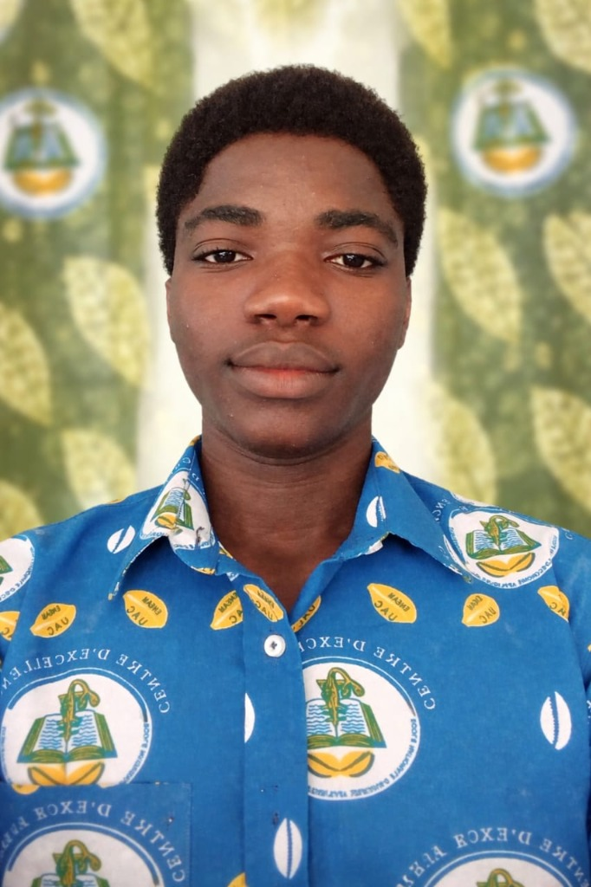

I. Informations personnelles
Nom : ABIALA
Prénom : Kevin
Numéro de téléphone : 01 50 40 40 64
Adresse email : abialakevin07@gmail.com

II. Mes diplômes
- • CEP
- • BEPC
- • BAC D
III. Mes loisirs
Bien que je ne sois pas un grand passionné de la lecture au sens strict du terme, je suis profondément captivé par le pouvoir des mots et l'imaginaire. J'adore les idées, les concepts et les histoires que véhiculent les livres, tout particulièrement les romans. Découvrir de nouvelles intrigues nourrit ma créativité et m'aide souvent à concevoir mes projets sous des angles différents.
Sur le plan sportif, le basketball occupe une place centrale dans mon quotidien. C'est mon sport de prédilection, celui qui m'a appris l'esprit d'équipe, la discipline et le dépassement de soi, des valeurs que j'applique dans tous les aspects de ma vie.
En ce qui concerne mon parcours académique et professionnel, je suis étudiant en Informatique de Gestion. Mon domaine principal est donc ancré dans le code, la structuration des systèmes d'information et la gestion des données. Cependant, j'ai aussi un "petit côté" très prononcé pour l'audiovisuel et le digital. Ce mélange inattendu me permet d'aborder la technologie avec un regard à la fois très technique et profondément créatif. J'aime cette idée de pouvoir développer une application de gestion robuste tout en étant capable de réaliser le montage vidéo de sa campagne ou de penser à son design digital. C'est cette dualité unique qui me fascine et dans laquelle je m'investis pleinement.